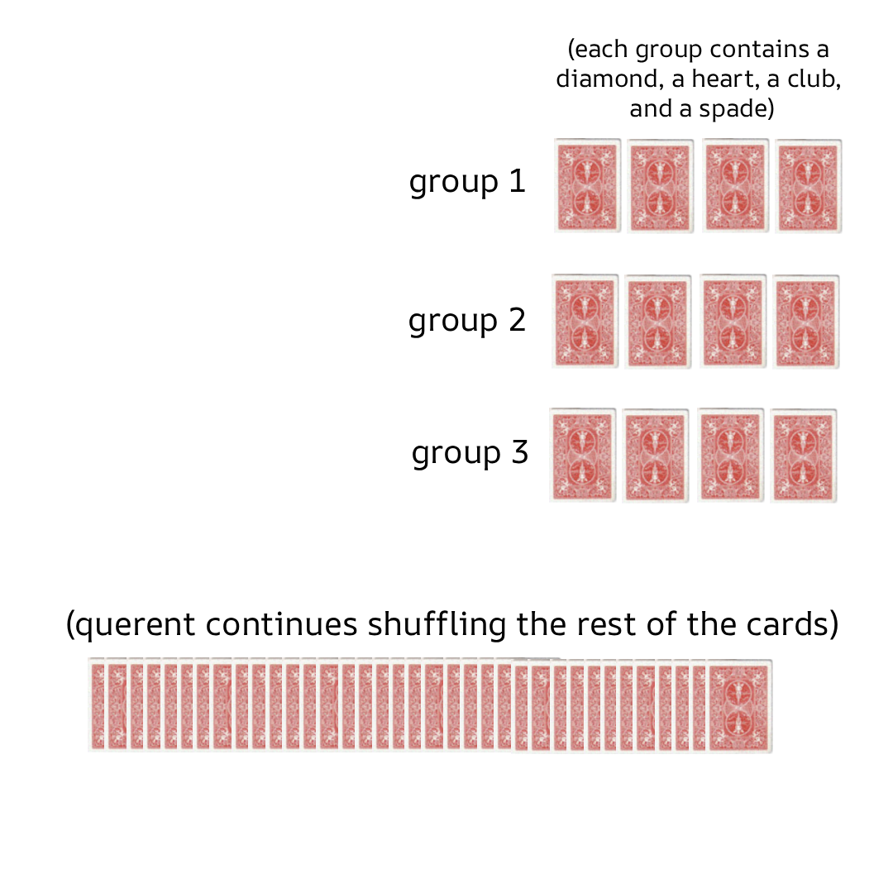
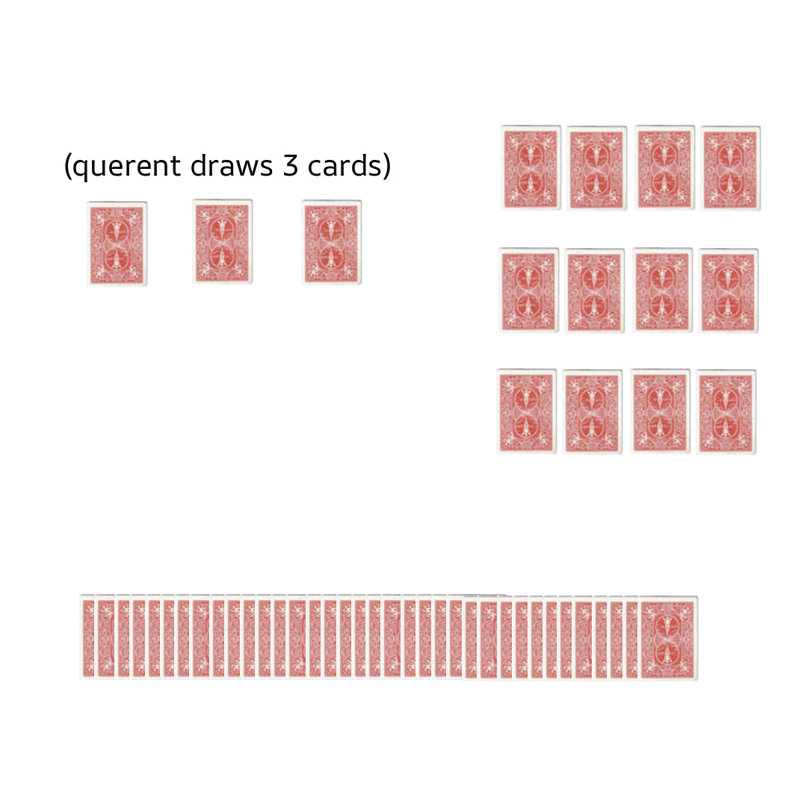
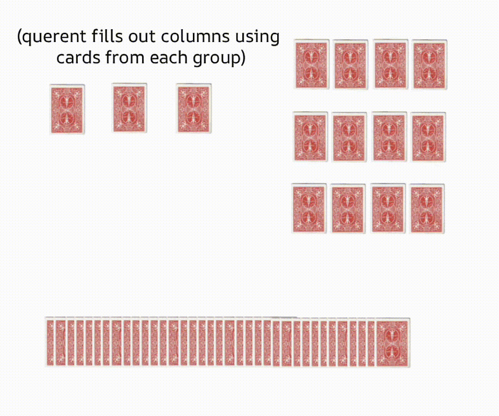
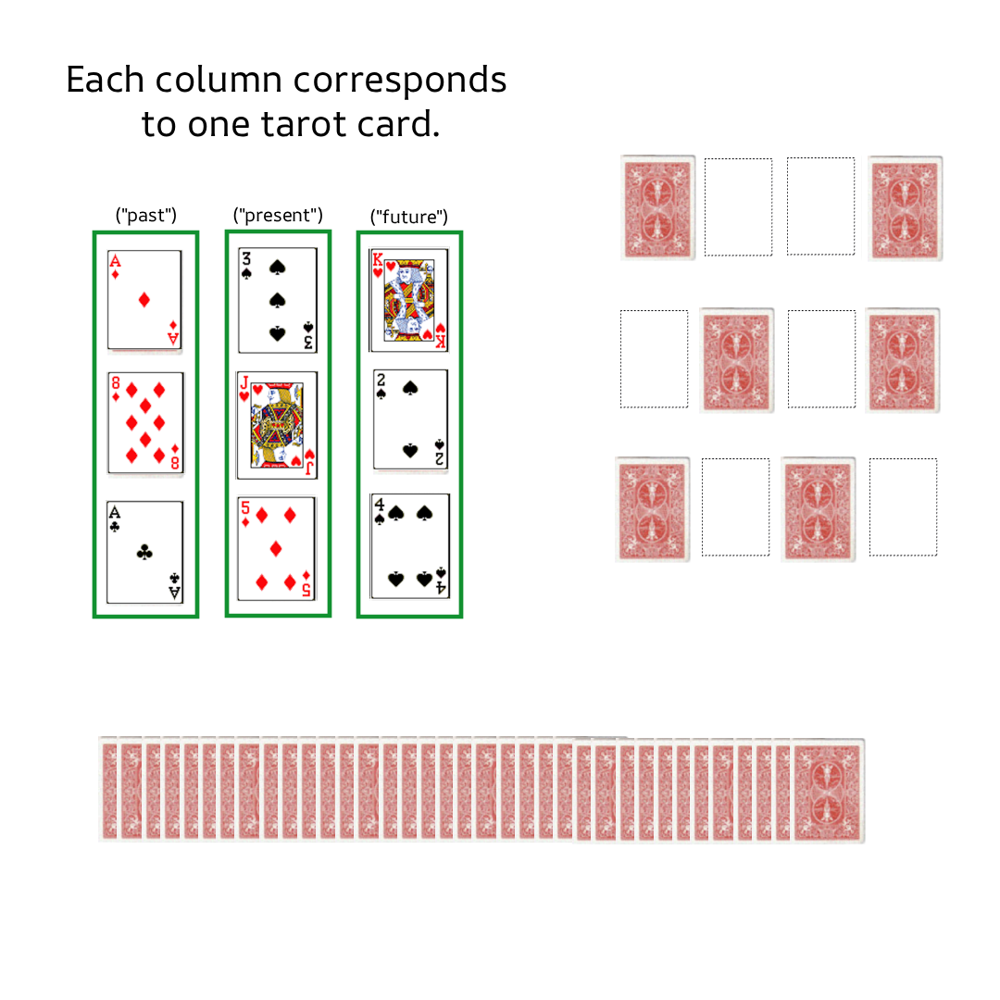
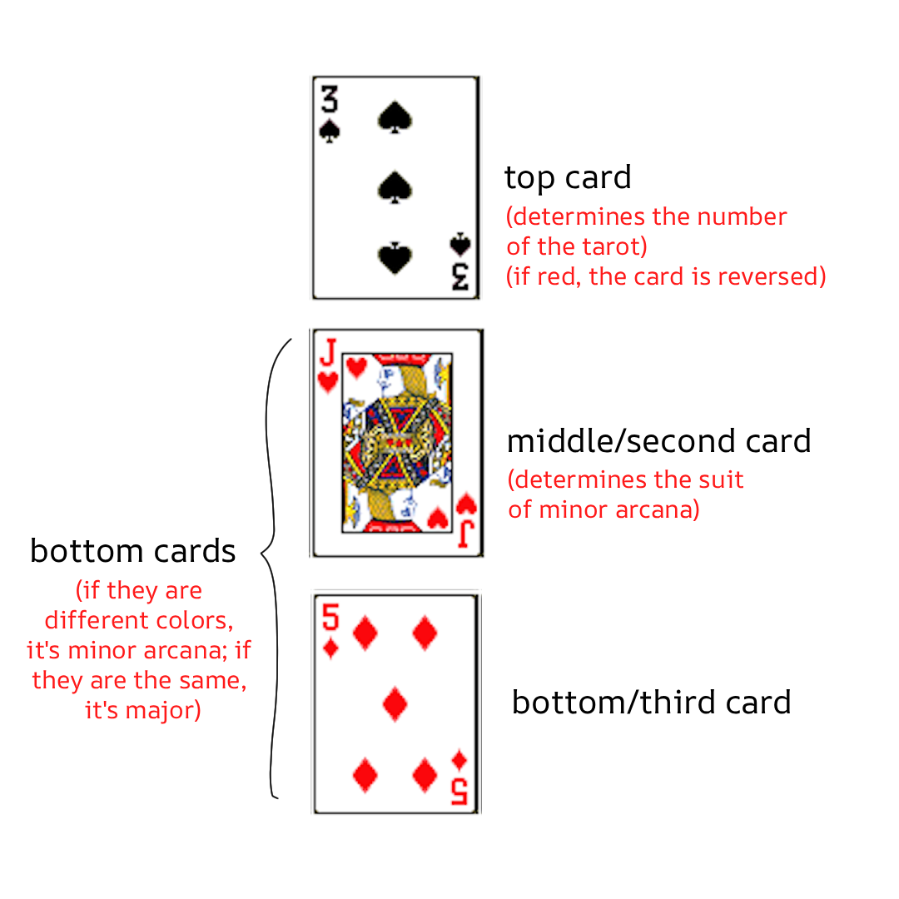

Yeeva's mapping of the 52 playing cards to the 78 tarot cards
contents
Things will make the most sense if you read each section in the order presented.
the idea
This technique involves drawing cards from a 52-card playing deck such that there is a 1 in 78 chance of drawing any combination of cards. There are still some probabilistic differences between an actual tarot deck and a 52-card playing deck that has been repurposed using the following technique, but the two are very close. This technique does not require any extra cards be added to the deck or that the cards be marked/drawn on in any way.
how to deal
Here are the steps to do a 3-card-spread tarot reading using a 52-card deck. It's easily adoptable to do any kind of spread.
- The querent shuffles the 52 playing cards while thinking of their question.
- The reader takes the deck and selects 3 groups of four cards: each group must contain one card of each suit. So 12 cards total are being drawn in this step (four spades, four clubs, etc.)
- Lay these groups out face down for the querent so that each group can be clearly identified. The querent can continue shuffling the cards more if needed.

- The querent draws three cards and places them in a row.

- The querent draws two cards from each of the three four-card groups, and places them in columns below the first three cards (see animation). In total, the querent should have drawn nine cards by this point.

- The cards are flipped over for interpretation.

how to read
You might say, "Yeeva, drawing three cards from the deck results in a 1 in 132,600 chance of drawing any combination! That's a lot more than 1 in 78!" Read on. This is where the magic happens!..
Cards are interpreted so that each 3-card column corresponds to a tarot card:

- If the two bottom cards of the column are different colors, then it's a minor arcana.
- The rank (number) of the top card is the number of the tarot card. Ace is ace, 2 is two, etc... Jack is knight, Q is queen, and K is king. Ignore the Pages for now; their mappings are explained below.
- The suit of the tarot is determined by the suit of the second card.
- Diamonds: pentacles
- Hearts: cups
- Clubs: wands
- Spades: swords
- If the top card is black, the tarot is upright. If it's red, the tarot is reversed.
- If the two bottom cards of the column are the same color, then it's probably a major arcana.
- If they are red: the tarot is in the first half of the major arcana.
- The top card tells you which tarot it is exactly: ace for The Magician, 2 for The High Priestess, 3 for The Empress...all the way to K for Death.
- I prefer to start at The Magician for ace, instead of The Fool, because the numbers on the tarot cards line up with the card's rank.
- Similarly, if the two bottom cards are black, the tarot is in the second half of the major arcana. The top card's rank again points to the specific card: ace for Temperance, 2 for The Devil...all the way up to 8 for The World.
This still leaves us with five unmapped cards (when the bottom cards are black). I map them as the following:
- 9 is The Fool.
- 10 is The Page of Pentacles.
- J is The Page of Cups.
- Q is The Page of Wands.
- K is The Page of Swords.
- For all the major arcana, the color of the top card determines its orientation (black for upright, red for reversed). For the Page cards, the card is upright if the middle card is the suit of spades; otherwise, it's reversed.
memorizing